“I have a passion for teaching kids to become readers, to become comfortable with a book, not daunted. Books shouldn’t be daunting, they should be funny, exciting and wonderful; and learning to be a reader gives a terrific advantage.”
- Roald Dahl, author
Storybooks
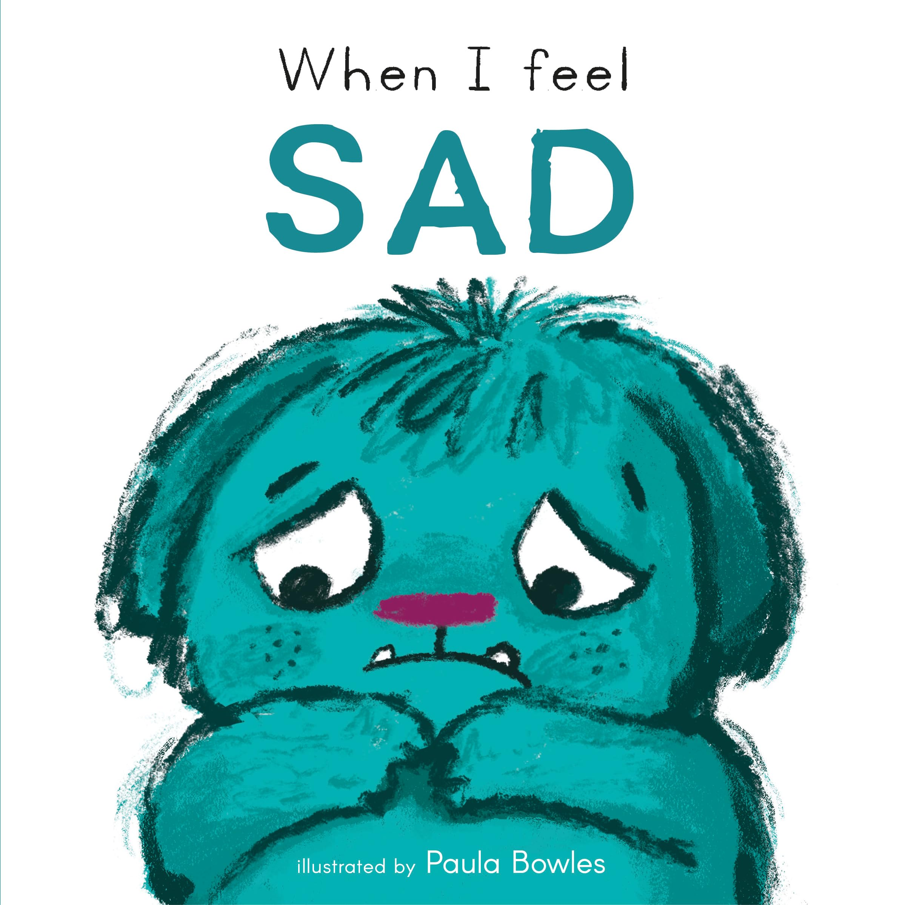
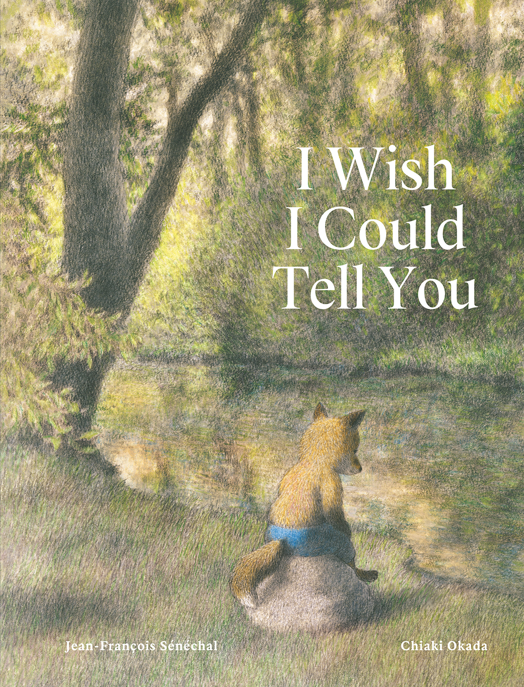
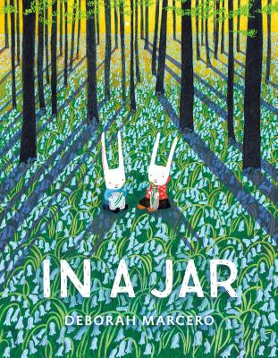
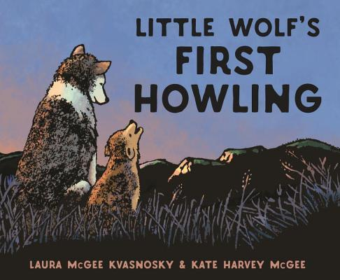
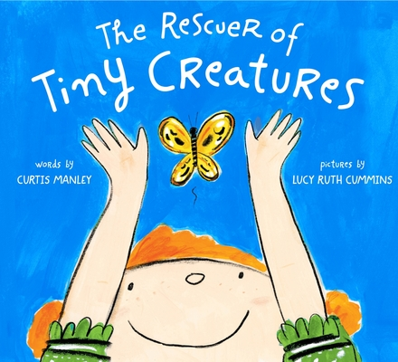
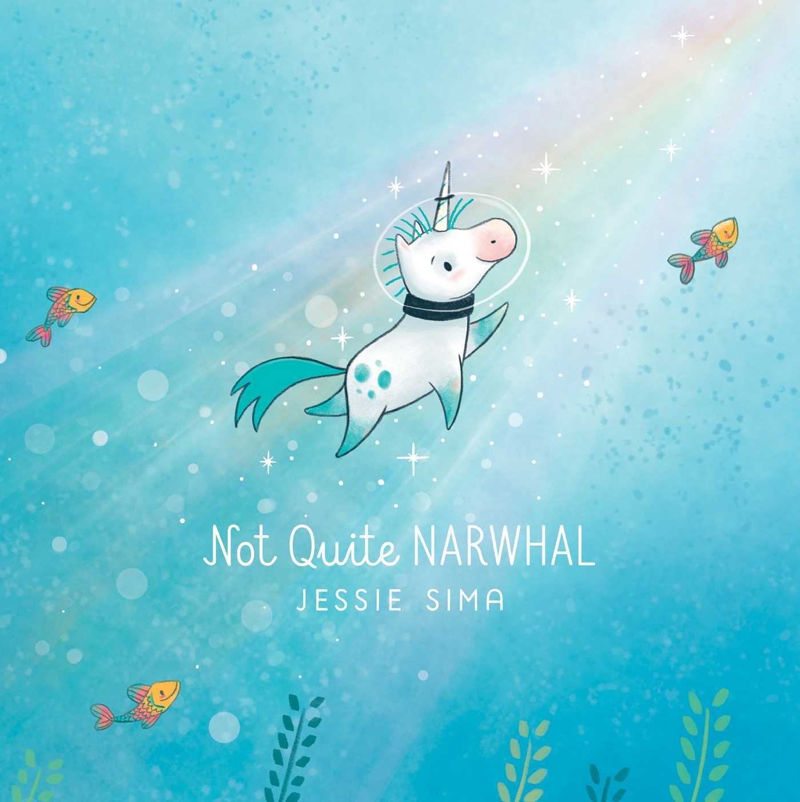
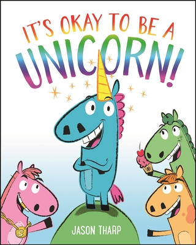
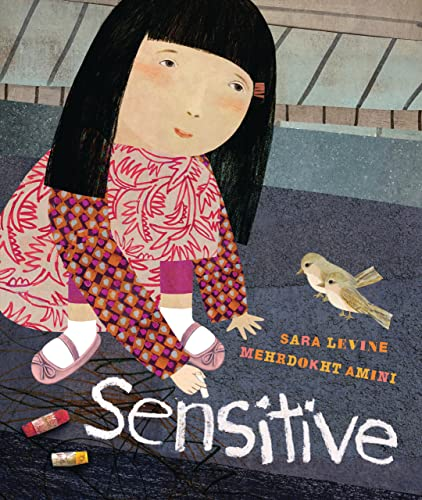
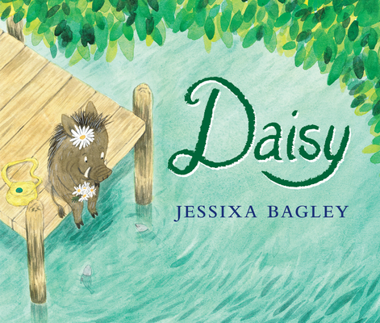
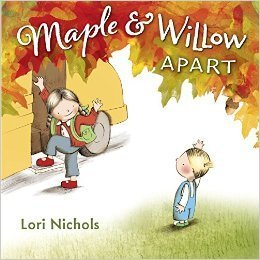
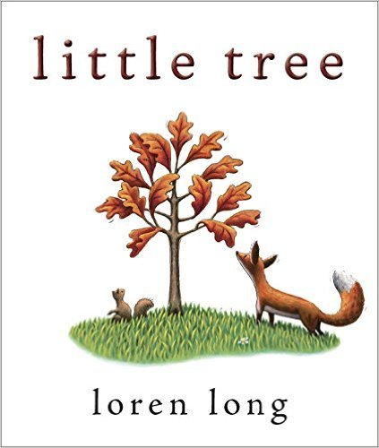